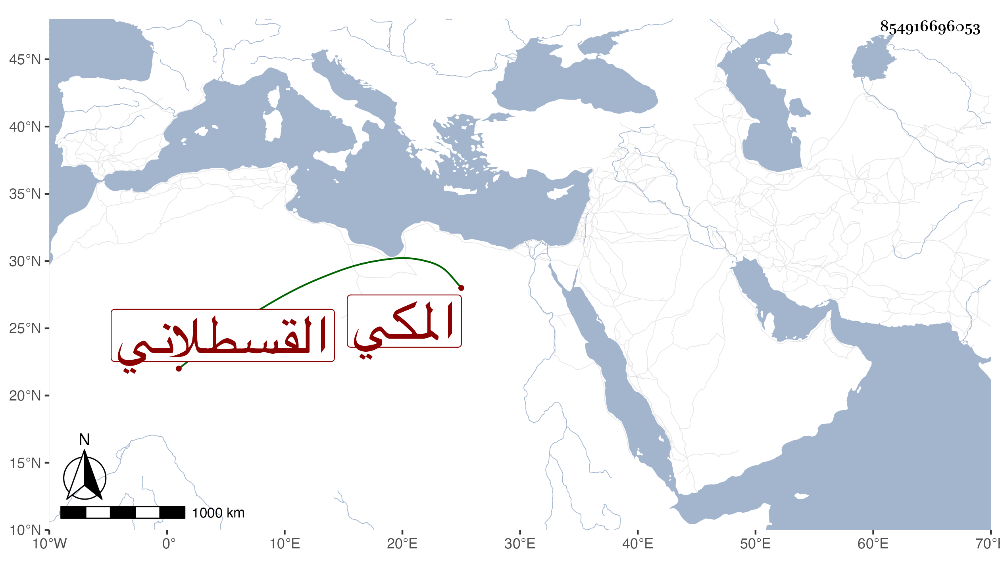

0902Sakhawi.DawLamic.ITO20230111-ara1.EIS1600.854916696053
Biography ID: 854916696053
ابن الزين الوالي أحمد بن عمر ابن الزين بيت ينسبون للأخوين حسين وحسن ابني الزين محمد بن الأمين محمد بن القطب محمد بن أبي العباس أحمد بن علي القسطلاني المكي وهم أحمد بن حسن بن أبي عبد الله محمد بن حسن المكبر وابناه الجمال محمد والعفيف عبد الله وابنا الجمال أولهما الكمال أبو البركات محمد والنور أبو الحسن علي أخذت عنهما وأبو الخير محمد بن حسين المصغر وابنه الشهاب أحمد مات في حياة أبيه وابناه الجمال أبو عبد الله محمد والد فاطمة والكمال أبو البركات محمد لقيته وأجازني وبنو الكمال جماعة يسمون محمدا منهم أبو الفضل ومحب الدين ويدعى مباركا ونجم الدين وشقيقه الأمين أبو البركات وابن أبي الفضل الفخر أبو بكر .
